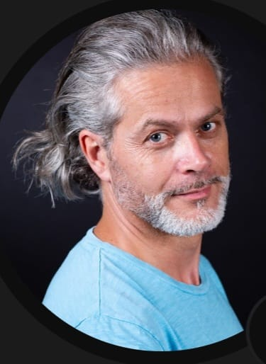
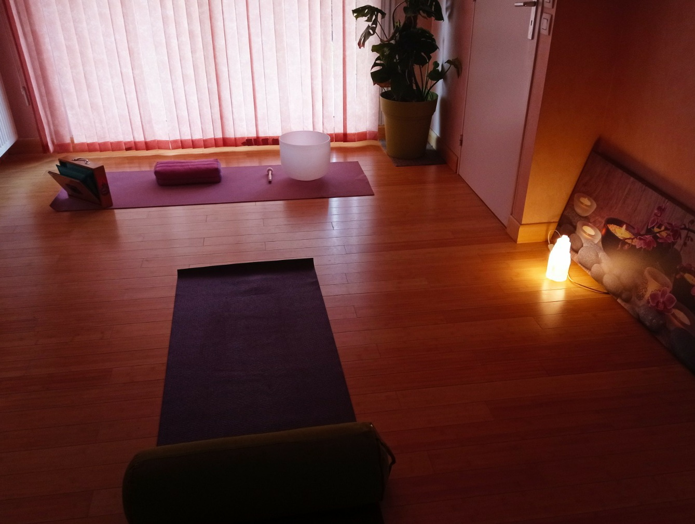
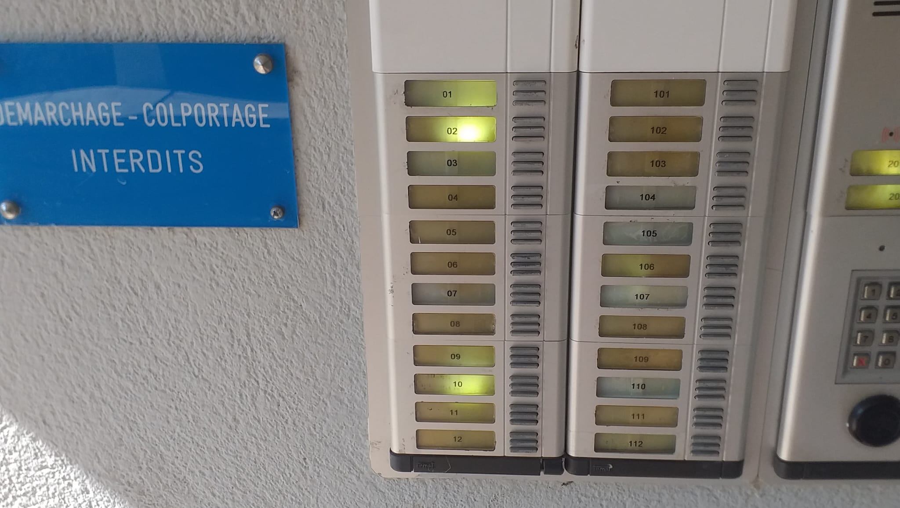

Présentation
Thérapeute spécialisé en constellation systémique et génogramme à Vannes.
Accompagnement individuel pour explorer et comprendre les schémas familiaux, les blocages émotionnels et les transmissions transgénérationnelles.
Consultation sur rendez-vous uniquement. Prise de rendez-vous rapide par SMS.
Génogramme
Explorer son histoire familiale pour mieux comprendre son présent?
Selon les principes de l'approche systémique, aucun être humain n'est une entité isolée. Chacun de
nous est le fruit d'une histoire familiale, d'un héritage émotionnel et relationnel qui s'inscrit
dans un système complexe de transmissions conscientes et inconscientes.
Le génogramme est un outil d'exploration et de compréhension qui permet de représenter visuellement
l'histoire familiale sur plusieurs générations. Il met en lumière les liens, les événements
marquants, les répétitions et les dynamiques qui influencent parfois nos choix, nos comportements et
nos relations sans que nous en ayons pleinement conscience.
Cheminer vers une meilleure compréhension de son héritage émotionnel
Le génogramme constitue une véritable interface entre le passé et le présent.
Il permet de rendre visible un héritage souvent silencieux en révélant les schémas relationnels, les
croyances, les loyautés familiales invisibles et les charges émotionnelles qui peuvent se
transmettre d'une génération à l'autre.
À travers cette cartographie familiale, chacun peut progressivement identifier ce qui lui appartient
réellement et ce qui relève de transmissions familiales parfois anciennes.
Transformer le poids du passé en ressource de développement personnel
En documentant les événements significatifs de l'histoire familiale sur quatre à cinq générations, le génogramme permet de :
- mieux comprendre ses réactions émotionnelles
- distinguer les émotions personnelles de celles héritées du système familial
- identifier les répétitions transgénérationnelles
- mettre en lumière les loyautés invisibles
- comprendre certains choix de vie, difficultés relationnelles ou blocages récurrents
- développer une plus grande liberté intérieure.
Ce que le génogramme peut révéler
L'exploration du génogramme permet notamment d'identifier :
- les syndromes d'anniversaire
- les répétitions de scénarios de vie
- les deuils non élaborés
- les secrets de famille et les non-dits
- les guerres, exils, migrations et déplacements géographiques
- les changements religieux ou culturels
- les attentats, catastrophes ou traumatismes collectifs
- les situations de veuvage ou de remariage
- les conflits liés aux héritages, spoliations ou déshéritements
- les faillites, pertes professionnelles ou périodes de chômage
- les interruptions de grossesse (IVG), fausses couches et enfants morts-nés
- les décès précoces ou soudains
- les parcours de procréation médicalement assistée (FIV)
- les naissances sous X
- les adoptions
- les abandons
- les filiations méconnues ou non reconnues.
Carl Gustav Jung
Les bénéfices du génogramme
Le génogramme offre souvent une compréhension nouvelle et immédiate des dynamiques
familiales.
Il permet :
✔ d'identifier rapidement les schémas répétitifs
✔ de mettre du sens sur certaines difficultés personnelles ou relationnelles
✔ d'améliorer la compréhension de son histoire familiale
✔ de favoriser la réconciliation avec son parcours de vie
✔ de renforcer son autonomie émotionnelle
✔ d'ouvrir de nouvelles perspectives d'évolution personnelle.
Les liens et les mécanismes qui semblaient jusqu'alors invisibles deviennent progressivement
perceptibles, offrant un regard plus clair sur soi-même et sur son histoire familiale.
Comprendre son histoire familiale, c'est souvent commencer à écrire son avenir avec davantage de
liberté et de conscience.
Votre thérapeute

Plus de 30 ans d'expérience dans l'accompagnement. Approche profondémment humaine et personnalisée.
Cabinet

Espace calme, confidentiel et propice au travail thérapeutique. Environnement agréable en rez-de jardin. Places de parking devant le hall d'entrée et accès PMR facilité.
Prendre rendez-vous
- Votre nom
- Votre adresse précise
- Motif de consultation
- Votre adresse courriel
- Dernière consultation psychologue
- Dernière consultation médecin
Un Questionnaire sous format Word vous est envoyé par courriel, après confirmation de votre rendez-vous.
Il est à renvoyer rempli préalablement à votre rendez-vous.
Règlement par virement bancaire privilégié.
IBAN professionnel est transmis après la confirmation de votre rendez-vous.
Tarifs
Constellation systémique individuelle
50 min – 80 €
Génogramme approfondi
environ 2h30 – 150 €
Localisation
Rez-de-jardin – Appartement 006
25 rue Pierre Ache – Vannes
Pour entrer ouverture automatique en sonnant à l'interphone 006

Avis clients
FAQ – Thérapeute Vannes
Comprendre les blocages et libérer les schémas familiaux.
Génogramme : à quoi ça sert ?
Mettre en lumière les répétitions transgénérationnelles.
Où consulter ?
Cabinet Espaces Horizon – Vannes.